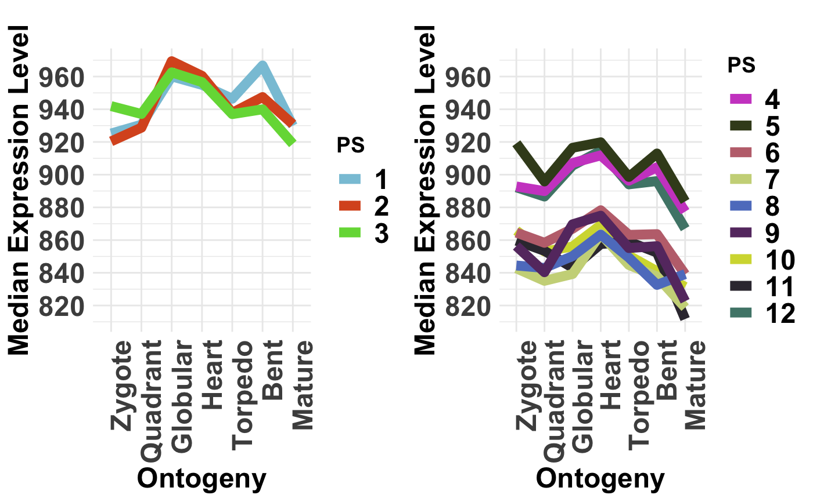
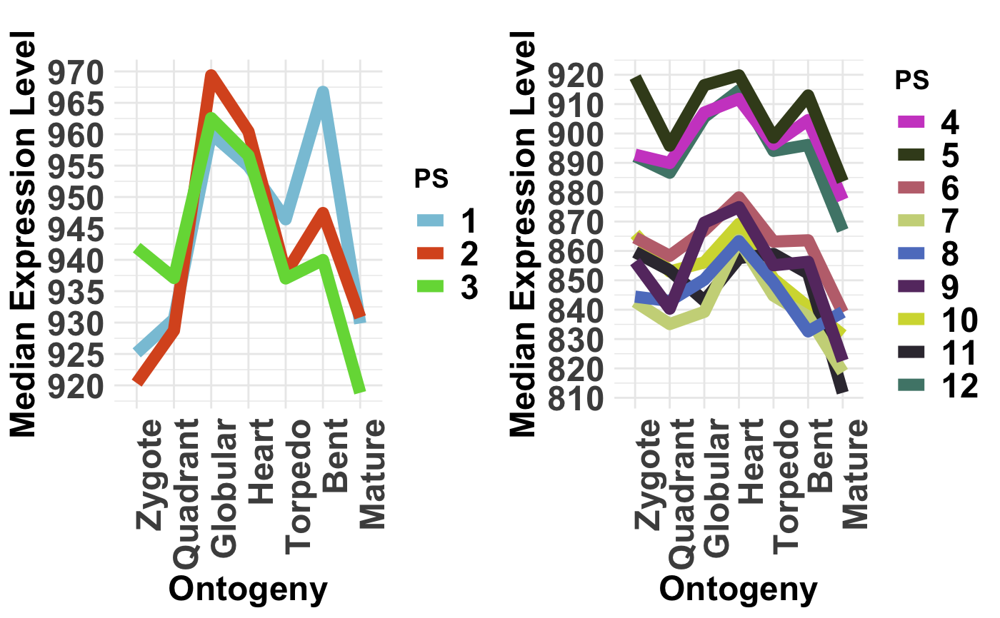
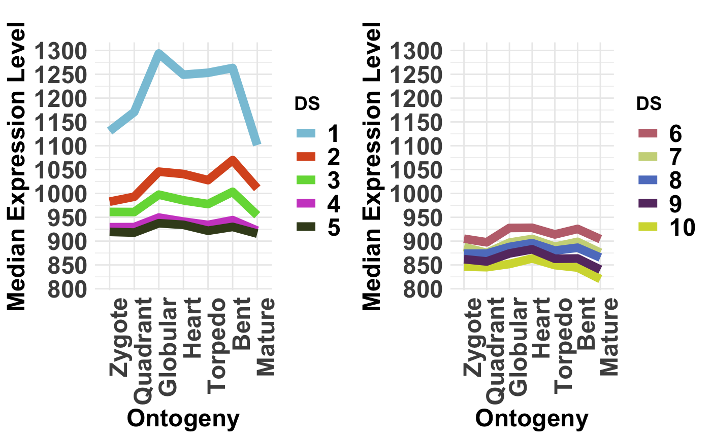

This function computes for each age category the corresponding median expression profile.
PlotMedians(
ExpressionSet,
Groups = NULL,
legendName = "age",
xlab = "Ontogeny",
ylab = "Median Expression Level",
main = "",
y.ticks = 10,
adjust.range = TRUE
)a standard PhyloExpressionSet or DivergenceExpressionSet object.
a list containing the age categories for which median expression levels shall be drawn.
For ex. evolutionary users can compare old phylostrata: PS1-3 (Class 1) and evolutionary young phylostrata: PS4-12 (Class 2).
In this example, the list could be assigned as, Groups = list(c(1:3), c(4:12)).
The group options is limited to 2 Groups.
a character string specifying the legend title.
label of x-axis.
label of y-axis.
main text.
number of ticks that shall be drawn on the y-axis.
logical indicating whether or not the y-axis scale shall be adjusted to the same range in case two groups are specified. Default is adjust.range = TRUE.
a plot showing median expression profiles of each age category.
This plot may be useful to compare the absolute median expression levels of each age category across stages.
In different developmental processes different phylostratum or divergence-stratum
classes might be more expressed than others, hence contributing more to the overall
phylotranscriptomics pattern (TAI or TDI).
This plot can help to identify the phylostratum or divergence-stratum classes
that contributes most to the overall transcriptome of the given developmental process.
### Example using a PhyloExpressionSet
### and DivergenceExpressionSet
# load PhyloExpressionSet
data(PhyloExpressionSetExample)
# load PhyloExpressionSet
data(DivergenceExpressionSetExample)
# plot evolutionary old PS (PS1-3) vs evolutionary young PS (PS4-12)
PlotMedians(PhyloExpressionSetExample,
Groups = list(c(1:3), c(4:12)),
legendName = "PS",
adjust.range = TRUE)

# if users wish to not adjust the y-axis scale when
# 2 groups are selected they can specify: adjust.range = FALSE
PlotMedians(PhyloExpressionSetExample,
Groups = list(c(1:3), c(4:12)),
legendName = "PS",
adjust.range = FALSE)

# plot conserved DS (DS1-5) vs divergent DS (PS6-10)
# NOTE: DS are always defined in the range 1, 2, ... , 10.
# Hence, make sure that your groups are within this range!
PlotMedians(DivergenceExpressionSetExample,
Groups = list(c(1:5), c(6:10)),
legendName = "DS",
adjust.range = TRUE)
